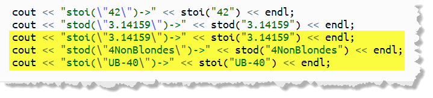

Comparing the Results
Now, go ahead and you run the test program. Use make 17 to compile and run under C++ 17, and make 98 to compile and run under C++ 98. Your code should compile under both platforms. When you run it, however, it doesn't produce exactly the same output as it does under C++17, which uses the stoi() from the standard library.

Look at the lines hightlighted in yellow, where we pass stod() or stoi() invalid input. C++17 and C++98 produce the same output for the first four inputs, but the last one fails entirely. Neither the library nor your version fails on stoi("3.14159"). Both convert what they can (the 3) and leaves the rest. But, the library version crashes with stoi("UB-40"); there is no possible conversion.
So, that means the version we wrote is better, right?
After all, who wants a function that crashes?
Well, not so fast. The question is, what should stod() and stoi() do with invalid input? In the next lesson, we'll use these techniques to look at more error handling.
 This course content is offered under a
CC
Attribution Non-Commercial license. Content in this course
can be considered under this license unless otherwise noted.
This course content is offered under a
CC
Attribution Non-Commercial license. Content in this course
can be considered under this license unless otherwise noted.